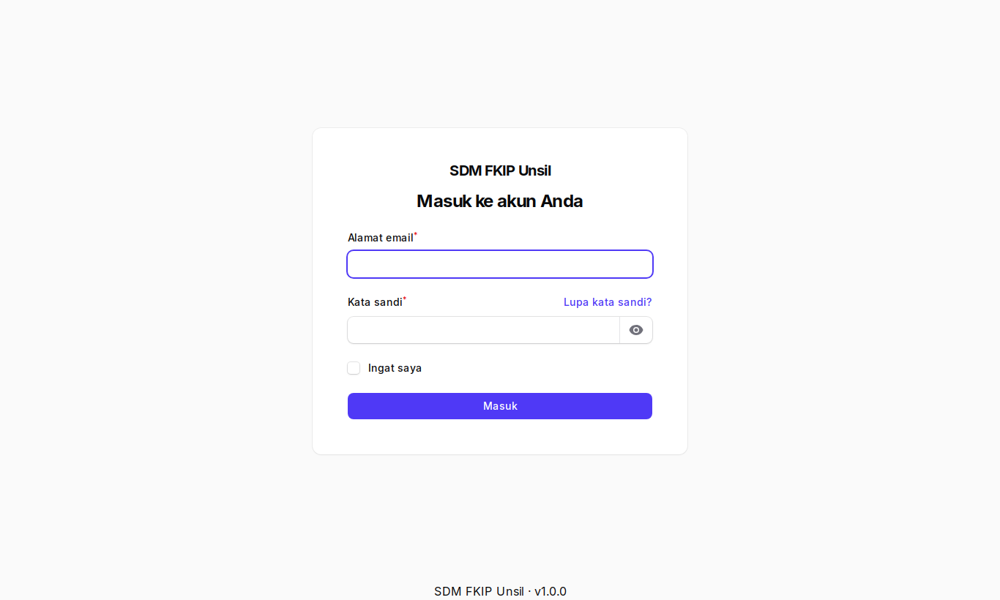
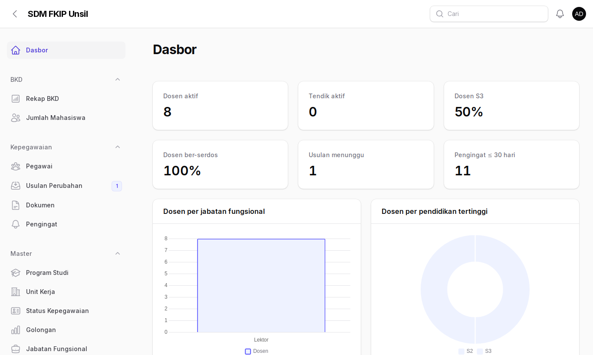
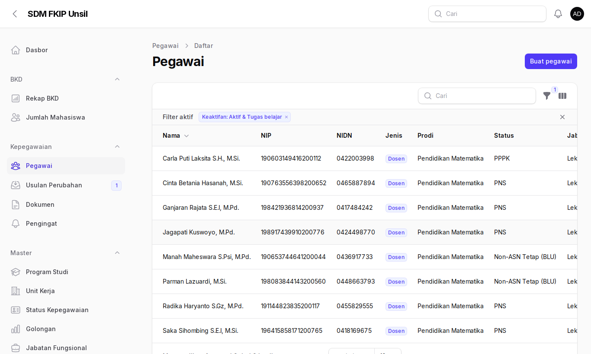
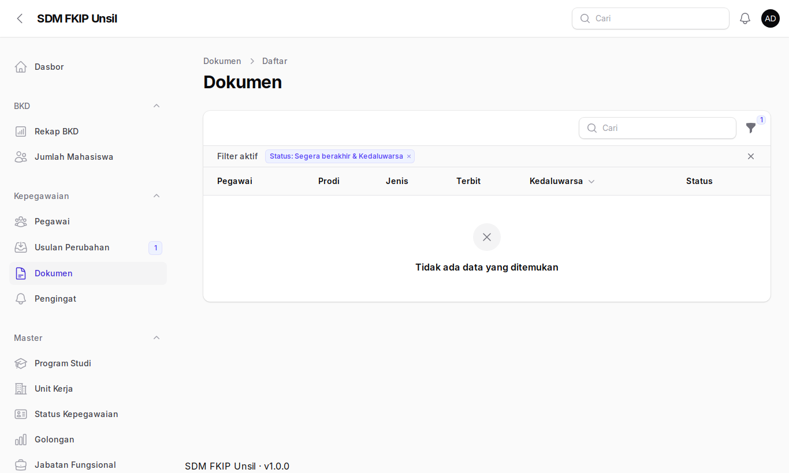
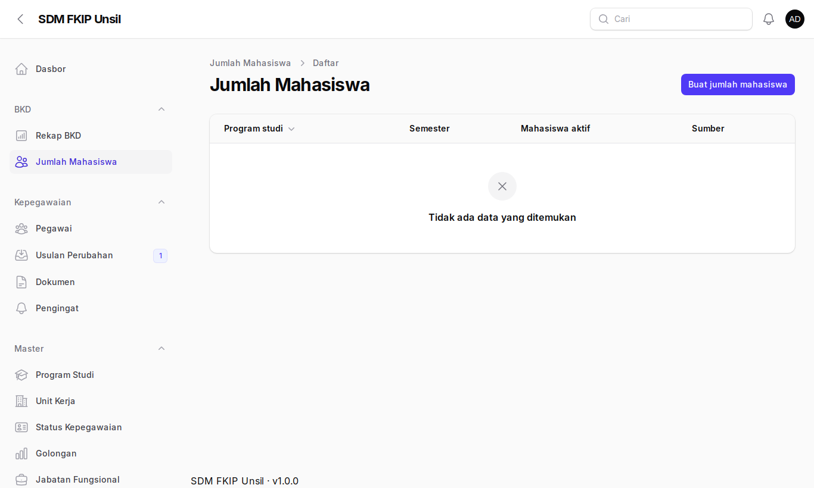
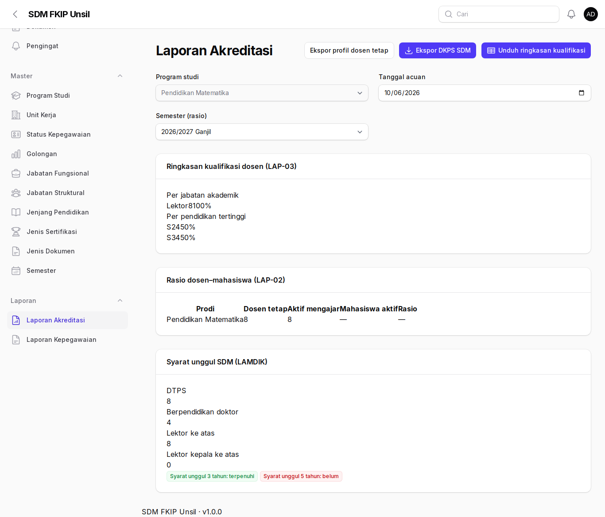

Panduan Admin Prodi
Akses terbatas pada pegawai dan laporan program studi Anda.
1. Masuk
- Buka
/admindan masuk dengan surel Unsil (MFA dianjurkan).

2. Dasbor prodi
Statistik otomatis terkunci ke prodi Anda.

3. Pegawai dan dokumen
Hanya pegawai prodi Anda yang tampak. Dokumen identitas disembunyikan; filter status Segera berakhir/Kedaluwarsa membantu menindaklanjuti.


4. Laporan akreditasi dan jumlah mahasiswa
- Isi Jumlah Mahasiswa per semester agar rasio dosen–mahasiswa terhitung.
- Buka Laporan Akreditasi (otomatis terkunci ke prodi Anda) dan ekspor sesuai kebutuhan.


Anda tidak dapat menyetujui usulan, menampilkan NIK/NPWP/rekening, atau membuka tautan berkas sensitif. Anda hanya melihat apakah berkas ada atau tidak.
Tanya jawab
Dosen prodi lain tidak tampil?
Memang demikian: akses dibatasi pada prodi Anda. Hubungi admin kepegawaian bila homebase dosen perlu diubah.